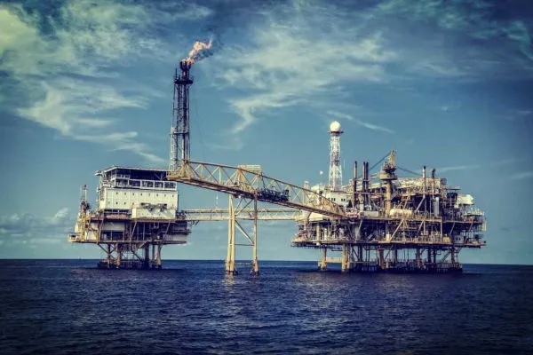
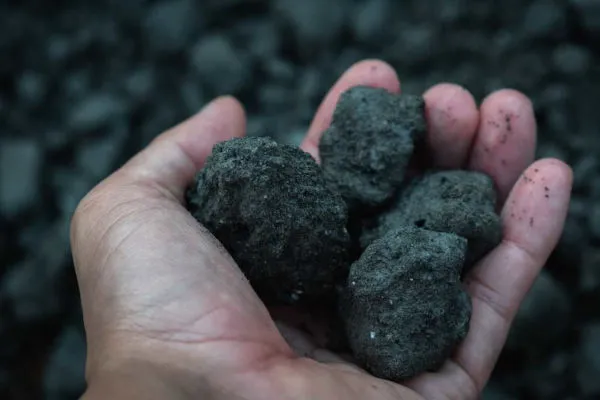
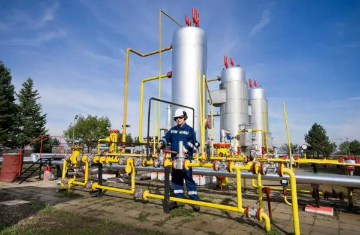

Esses recursos naturais recebem o nome de combustíveis fósseis pelo fato de sua origem estar associada ao processo de decomposição de material orgânico em camadas de bacias sedimentares, de forma semelhante ao que ocorre no processo de formação dos fósseis. Apesar disso, existem teorias menos populares na área científica que defendem a origem desses combustíveis por outros meios, como a teoria inorgânica ou abiótica do petróleo. No entanto, essas proposições ainda carecem de uma maior validação no âmbito acadêmico, uma vez que se pautam apenas em hipóteses e alguns indícios.
Como são de origem fóssil, o petróleo e demais combustíveis a ele associados não são renováveis — ou melhor, sua reposição na natureza ocorre de maneira muito lenta. Com isso, a geopolítica do petróleo acirra-se no mundo, haja vista que, desde a Revolução Industrial, esse recurso é de extrema necessidade para o funcionamento da economia capitalista mundial.
"O petróleo é considerado, ao lado da água, o principal recurso natural da era moderna. Embora existam esforços governamentais em todo o mundo para diminuir a dependência em relação a esse elemento, ele ainda é o combustível mais utilizado. Além do fato de ser um recurso não renovável, o petróleo apresenta como desvantagem a emissão em grande quantidade de poluentes na atmosfera durante a sua queima.
A principal utilização do petróleo é a sua conversão em gasolina e óleo diesel para veículos. Além disso, com base nele, são produzidos: o GLP (Gás Liquefeito de Petróleo, utilizado como gás de cozinha), o nafta (um derivado utilizado na indústria petroquímica), a querosene de avião, o plástico, alguns tipos de solvente e outros produtos.
O carvão mineral, por sua vez, ganhou uma maior relevância na estruturação das sociedades com a Primeira Revolução Industrial, sendo o principal recurso dessa época. No entanto, ainda nos dias atuais, ele é amplamente utilizado, principalmente nas chamadas termelétricas, que funcionam com base no aquecimento da água, que é convertida em vapor, para girar uma turbina e ativar um gerador de eletricidade.
O carvão mineral é uma rocha sedimentar com um alto teor de carbono em sua estrutura. Sua origem remonta à decomposição de materiais vegetais, principalmente de grandes grupos vegetais antigos, que foram soterrados há uma média de tempo de 300 milhões de anos. Embora o seu poder calorífico e o seu tempo de combustão resultem em uma grande vantagem em termos de produtividade, o carvão mineral é o mais poluente dos combustíveis fósseis, mas é o mais abundante entre eles. Quase metade de suas reservas encontra-se na China.
O gás natural vem tornando-se o mais promissor dos combustíveis fósseis em termos de investimentos e utilização. As suas vantagens são: é menos poluente do que os demais de seu grupo, possui amplas reservas e o custo de produção de energia com base nele é menor do que com base em carvão e urânio enriquecido. O seu processo de formação ocorre, geralmente, em conjunto com o petróleo, embora nem sempre eles se encontrem nas mesmas áreas.
As duas principais potências mundiais em termos de reservas e exploração do gás natural são a Rússia e os EUA. Os russos, inclusive, fazem um bom uso geopolítico desse recurso, uma vez que boa parte da Ásia e da Europa é dependente da importação desse produto que circula em gasodutos construídos pela Rússia em vários territórios, incluindo a Ucrânia.
Apesar da matriz energética brasileira ser considerada uma das mais renováveis do mundo, o uso de combustíveis fósseis ainda é elevado no Brasil. O país ainda é bastante dependente do uso deles. Cerca de 36% da matriz energética brasileira é constituída por combustíveis fósseis, como o petróleo e o carvão mineral.
O Brasil possui uma das maiores reservas de petróleo do mundo – o pré-sal brasileiro –, tornou-se um dos maiores exportadores do combustível e atraiu inúmeros investidores para o setor.
Segundo dados da Brown to Green divulgados em 2018, o Brasil superou a média dos países que pertencem ao G20 de subsídios destinados ao uso de combustíveis fósseis. Só no ano de 2016, foram destinados a essa fonte de energia cerca de US$ 16,2 bilhões.
O governo brasileiro também manteve fixos os valores de importância e revenda da gasolina, do diesel, da querosene e do gás natural. O incentivo ao uso de combustíveis fósseis pode significar que o Brasil não consiga alcançar as metas estabelecidas pelo Acordo de Paris em relação à emissão de gases de efeito estufa.
O uso de combustíveis fósseis está associado a diversos problemas ambientais. A dependência da matriz energética mundial em relação às fontes não renováveis de energia faz com que os reservatórios diminuam cada vez mais devido à exploração intensa e desenfreada dos recursos naturais. E por serem fontes não renováveis de energia, a disponibilidade dos combustíveis fósseis está ameaçada, e, portanto, a produção de energia mundial também.
Outro problema ambiental é a questão da emissão de gases de efeito estufa por meio da queima dos combustíveis fósseis. O dióxido de carbono é um dos principais gases que intensificam o efeito estufa e provoca alterações climáticas. A questão da redução das emissões tem sido alvo de discussões de inúmeras conferências ambientais. Diversos acordos já foram estabelecidos, como o Protocolo de Kyoto e o Acordo de Paris. Buscar alternativas à substituição dos combustíveis fósseis para produção de energia é essencial para conservação do meio ambiente e para conter as alterações no clima.